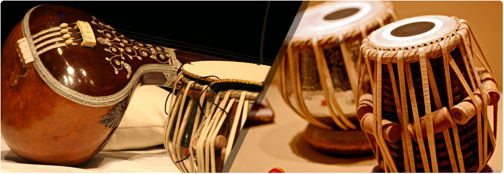

|
|
|  |
|
|
|
Ghatam
The ghatam, one of the most ancient percussion instruments of South India, is a mud pot with a narrow mouth. From the mouth, it slants outwards to form a ridge.
Made mainly of clay baked with brass or copper filings with a small amount of iron filings, the size of the ghatam varies according to its pitch. The pitch can be slightly altered by the application of plasticine clay or water.
Playing position: The pot is usually placed on the lap of the performer, with the mouth facing the belly. Â The performer uses his fingers, palms and also his nails to produce different sounds. |
Kanjira
The Kanjira is one of the most ancient percussion instruments. It is a secondary accompaniment to the mridangam. It is similar to the Western tambourine and consists of a circular wooden frame about eight or nine inches in diameter and three to four inches in depth.
A lizard skin is stretched over one side forming the playing head while the other side is left open.
There are three or four slits in the frame which contain small metal discs which jingle when the kanjira is played. The kanjira is held in the left hand and played with the palm and fingers of the right hand. |
|
|
Violin
The South Indian violin is identical to the Western violin but differs in tuning and playing position.
The violin may be traced back in South Indian music to as early as 1764 as witnessed in a painting in the palace of Tippu Sultan in Srirangapatnam in Mysore State, South India.
Balaswami Dikshitar, brother of the famous composer, Muttuswamy Dikshitar, was the first Indian musician to adapt the Western violin and popularize its use in Karnatic music. Some scholars believe that the violin existed in India during the Ramayana period (400 B.C.) and it was from India that it traveled to the West. |
Nagaswaram
The Nagaswaram, which belongs to the woodwind family is known as a Mangala Vadya since it is played in temples, processions, festivals and auspicious occasions like marriages, etc.
The correct name, incidentally, is Nagaswaran and not Nadaswaram as incorrectly pronounced by some.
There are two varieties of Nagaswaram: Timiri, which is shorter and higher in pitch and Pari, which is longer and lower in pitch.
It is a double reed instrument with a conical bore which gradually enlarges towards the lower end. It is usually made of a type of ebony. |
|
|
Mridangam
The mridangam is the classical drum of South Indian and is used as an accompaniment for vocal, instrumental and dance performances.
Its literal meaning, "Clay-body," indicates that it was originally made of clay. Later it was made of wood. The present day mridangam is made of a single block of wood. It is made either of Jackwood or redwood. In some cases the core of the coconut or palm tree is used also.
It is a barrel-shaped double-headed drum, the right head being smaller than the left. The two heads are made of layers of skin. |
Sruti Peti
 A shruti box (or sruti box) is a small wooden instrument that traditionally works on a system of bellows. It is similar to a harmonium and is used to provide a drone in a practice session or concert of Indian classical music. A shruti box (or sruti box) is a small wooden instrument that traditionally works on a system of bellows. It is similar to a harmonium and is used to provide a drone in a practice session or concert of Indian classical music.
It is used as an accompaniment to other instruments and notably the flute. Use of the shruti box has widened with the cross-cultural influences of world music and new age music to provide a drone for many other instruments as well as vocalists. Adjustable buttons allow tuning. Nowadays, electronic shruti boxes are commonly used, which are called shruti petti in Tamil and Telugu and sur peti in Hindi.
|
|
|
|
| |
|